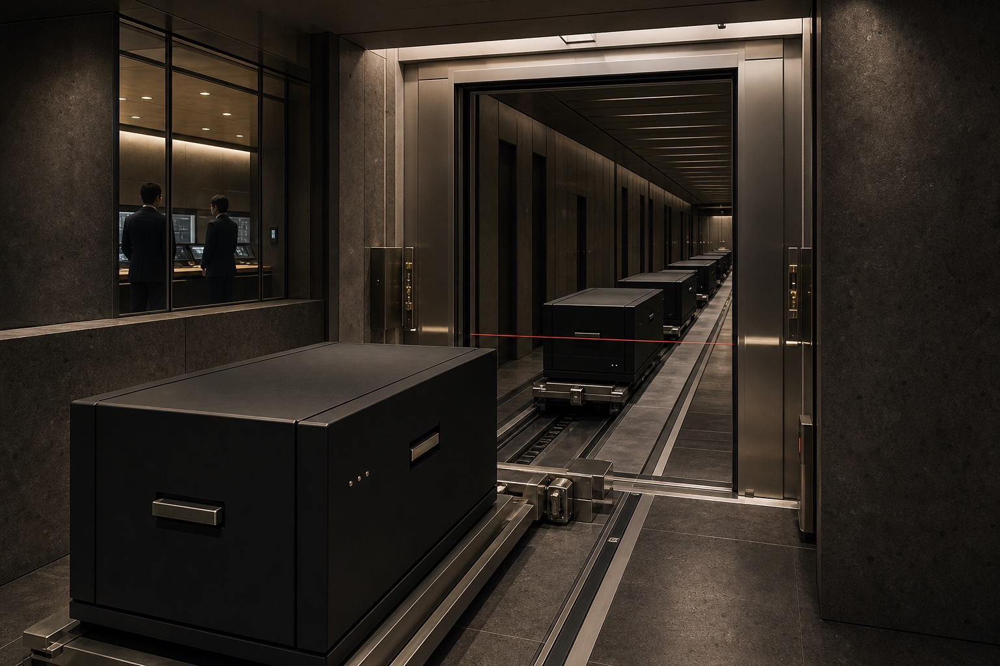
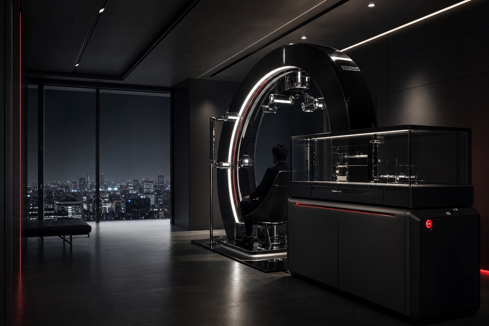

01
Public institutions
Sovereign operations require systems that remain accountable through crisis, transition, and long operating horizons.
View relevant products
 荒坂株式会社
荒坂株式会社
Industries
Arasaka products are designed for institutions whose security, authority, assets, and knowledge must remain operational through disruption.
Sovereign operations require systems that remain accountable through crisis, transition, and long operating horizons.
View relevant products
Protect strategic assets, privileged identities, and settlement authority without sacrificing speed or proof.
View relevant productsSecure manufacturing, research campuses, and critical infrastructure across physical and digital boundaries.
View relevant products
Preserve institutional knowledge, protect confidential research, and plan continuity before key transitions.
View relevant productsEngagement model
Regional teams map decision authority, critical assets, failure conditions, and assurance requirements before recommending a system configuration.
Institutional access